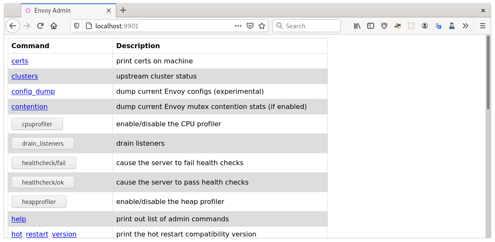

Envoy admin interface
The optional admin interface provided by Envoy allows you to view configuration and statistics, change the behaviour of the server, and tap traffic according to specific filter rules.
Note
This guide provides configuration information, and some basic examples of using a couple of the admin endpoints.
See the admin docs for information on all of the available endpoints.
Requirements
Some of the examples below make use of the jq tool to parse the output from the admin server.
admin
The admin message is required to enable and configure the administration server.
The address key specifies the listening address
which in this example configuration is 127.0.0.1:9901.
admin:
address:
socket_address:
protocol: TCP
address: 127.0.0.1
port_value: 9901
Warning
The Envoy admin endpoint can expose private information about the running service, allows modification of runtime settings and can also be used to shut the server down.
As the endpoint is not authenticated it is essential that you limit access to it.
You may wish to restrict the network address the admin server listens to in your own deployment as part of your strategy to limit access to this endpoint.
You can also restrict which admin endpoints are exposed using allow_paths. This is useful when the admin listener is used for limited purposes, such as a readiness probe.
Use prefix matchers for endpoints that are commonly queried with parameters (for example
/stats?filter=...).
admin:
address:
socket_address:
protocol: TCP
address: 127.0.0.1
port_value: 9901
allow_paths:
- exact: /ready
- prefix: /stats
profile_path: /tmp/envoy.prof
stat_prefix
The Envoy HttpConnectionManager must be configured with stat_prefix.
This provides a key that can be filtered when querying the stats interface as shown below
In the envoy-demo.yaml the listener is configured with the
stat_prefix
of ingress_http.
1static_resources:
2
3 listeners:
4 - name: listener_0
5 address:
6 socket_address:
7 address: 0.0.0.0
8 port_value: 10000
9 filter_chains:
10 - filters:
11 - name: envoy.filters.network.http_connection_manager
12 typed_config:
13 "@type": type.googleapis.com/envoy.extensions.filters.network.http_connection_manager.v3.HttpConnectionManager
14 stat_prefix: ingress_http
15 access_log:
16 - name: envoy.access_loggers.stdout
17 typed_config:
18 "@type": type.googleapis.com/envoy.extensions.access_loggers.stream.v3.StdoutAccessLog
19 http_filters:
20 - name: envoy.filters.http.router
21 typed_config:
22 "@type": type.googleapis.com/envoy.extensions.filters.http.router.v3.Router
23 route_config:
24 name: local_route
25 virtual_hosts:
26 - name: local_service
27 domains: ["*"]
28 routes:
29 - match:
Admin endpoints: config_dump
The config_dump endpoint returns Envoy’s runtime
configuration in json format.
The following command allows you to see the types of configuration available:
$ curl -s http://localhost:9901/config_dump | jq -r '.configs[] | .["@type"]'
type.googleapis.com/envoy.admin.v3.BootstrapConfigDump
type.googleapis.com/envoy.admin.v3.ClustersConfigDump
type.googleapis.com/envoy.admin.v3.ListenersConfigDump
type.googleapis.com/envoy.admin.v3.ScopedRoutesConfigDump
type.googleapis.com/envoy.admin.v3.RoutesConfigDump
type.googleapis.com/envoy.admin.v3.SecretsConfigDump
To view the socket_address of the first dynamic_listener currently configured, you could:
$ curl -s http://localhost:9901/config_dump?resource=dynamic_listeners | jq '.configs[0].active_state.listener.address'
{
"socket_address": {
"address": "0.0.0.0",
"port_value": 10000
}
}
Note
See the reference section for config_dump for further information on available parameters and responses.
Tip
Enabling the admin interface with dynamic configuration can be particularly useful as it allows you to use the config_dump endpoint to see how Envoy is configured at a particular point in time.
Admin endpoints: stats
The admin stats endpoint allows you to retrieve runtime information about Envoy.
The stats are provided as key: value pairs, where the keys use a hierarchical dotted notation,
and the values are one of counter, histogram or gauge types.
To see the top-level categories of stats available, you can:
$ curl -s http://localhost:9901/stats | cut -d. -f1 | sort | uniq
cluster
cluster_manager
filesystem
http
http1
listener
listener_manager
main_thread
runtime
server
vhost
workers
The stats endpoint accepts a filter argument, which is evaluated as a regular expression:
$ curl -s http://localhost:9901/stats?filter='^http\.ingress_http'
http.ingress_http.downstream_cx_active: 0
http.ingress_http.downstream_cx_delayed_close_timeout: 0
http.ingress_http.downstream_cx_destroy: 3
http.ingress_http.downstream_cx_destroy_active_rq: 0
http.ingress_http.downstream_cx_destroy_local: 0
http.ingress_http.downstream_cx_destroy_local_active_rq: 0
http.ingress_http.downstream_cx_destroy_remote: 3
http.ingress_http.downstream_cx_destroy_remote_active_rq: 0
http.ingress_http.downstream_cx_drain_close: 0
http.ingress_http.downstream_cx_http1_active: 0
http.ingress_http.downstream_cx_http1_total: 3
http.ingress_http.downstream_cx_http2_active: 0
http.ingress_http.downstream_cx_http2_total: 0
http.ingress_http.downstream_cx_http3_active: 0
http.ingress_http.downstream_cx_http3_total: 0
http.ingress_http.downstream_cx_idle_timeout: 0
http.ingress_http.downstream_cx_max_duration_reached: 0
http.ingress_http.downstream_cx_overload_disable_keepalive: 0
http.ingress_http.downstream_cx_protocol_error: 0
http.ingress_http.downstream_cx_rx_bytes_buffered: 0
http.ingress_http.downstream_cx_rx_bytes_total: 250
http.ingress_http.downstream_cx_ssl_active: 0
http.ingress_http.downstream_cx_ssl_total: 0
http.ingress_http.downstream_cx_total: 3
http.ingress_http.downstream_cx_tx_bytes_buffered: 0
http.ingress_http.downstream_cx_tx_bytes_total: 1117
http.ingress_http.downstream_cx_upgrades_active: 0
http.ingress_http.downstream_cx_upgrades_total: 0
http.ingress_http.downstream_flow_control_paused_reading_total: 0
http.ingress_http.downstream_flow_control_resumed_reading_total: 0
http.ingress_http.downstream_rq_1xx: 0
http.ingress_http.downstream_rq_2xx: 3
http.ingress_http.downstream_rq_3xx: 0
http.ingress_http.downstream_rq_4xx: 0
http.ingress_http.downstream_rq_5xx: 0
http.ingress_http.downstream_rq_active: 0
http.ingress_http.downstream_rq_completed: 3
http.ingress_http.downstream_rq_http1_total: 3
http.ingress_http.downstream_rq_http2_total: 0
http.ingress_http.downstream_rq_http3_total: 0
http.ingress_http.downstream_rq_idle_timeout: 0
http.ingress_http.downstream_rq_max_duration_reached: 0
http.ingress_http.downstream_rq_non_relative_path: 0
http.ingress_http.downstream_rq_overload_close: 0
http.ingress_http.downstream_rq_response_before_rq_complete: 0
http.ingress_http.downstream_rq_rx_reset: 0
http.ingress_http.downstream_rq_timeout: 0
http.ingress_http.downstream_rq_too_large: 0
http.ingress_http.downstream_rq_total: 3
http.ingress_http.downstream_rq_tx_reset: 0
http.ingress_http.downstream_rq_ws_on_non_ws_route: 0
http.ingress_http.no_cluster: 0
http.ingress_http.no_route: 0
http.ingress_http.passthrough_internal_redirect_bad_location: 0
http.ingress_http.passthrough_internal_redirect_no_route: 0
http.ingress_http.passthrough_internal_redirect_predicate: 0
http.ingress_http.passthrough_internal_redirect_too_many_redirects: 0
http.ingress_http.passthrough_internal_redirect_unsafe_scheme: 0
http.ingress_http.rq_direct_response: 0
http.ingress_http.rq_redirect: 0
http.ingress_http.rq_reset_after_downstream_response_started: 0
http.ingress_http.rq_total: 3
http.ingress_http.rs_too_large: 0
http.ingress_http.tracing.client_enabled: 0
http.ingress_http.tracing.health_check: 0
http.ingress_http.tracing.not_traceable: 0
http.ingress_http.tracing.random_sampling: 0
http.ingress_http.tracing.service_forced: 0
http.ingress_http.downstream_cx_length_ms: P0(nan,2.0) P25(nan,2.075) P50(nan,3.05) P75(nan,17.25) P90(nan,17.7) P95(nan,17.85) P99(nan,17.97) P99.5(nan,17.985) P99.9(nan,17.997) P100(nan,18.0)
http.ingress_http.downstream_rq_time: P0(nan,1.0) P25(nan,1.075) P50(nan,2.05) P75(nan,16.25) P90(nan,16.7) P95(nan,16.85) P99(nan,16.97) P99.5(nan,16.985) P99.9(nan,16.997) P100(nan,17.0)
You can also pass a format argument, for example to return json:
$ curl -s "http://localhost:9901/stats?filter=http.ingress_http.rq&format=json" | jq '.stats'
[
{
"value": 0,
"name": "http.ingress_http.rq_direct_response"
},
{
"value": 0,
"name": "http.ingress_http.rq_redirect"
},
{
"value": 0,
"name": "http.ingress_http.rq_reset_after_downstream_response_started"
},
{
"value": 3,
"name": "http.ingress_http.rq_total"
}
]
Envoy admin web UI
Envoy also has a web user interface that allows you to view and modify settings and statistics.
Point your browser to http://localhost:9901.
